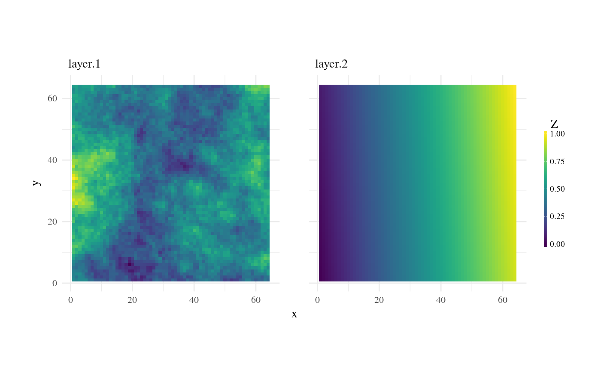
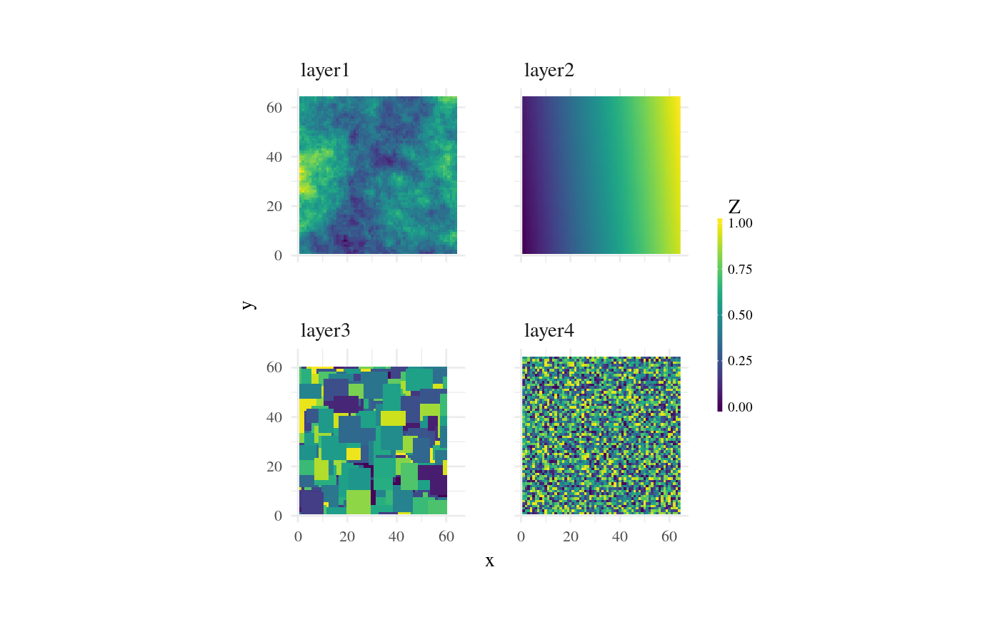

Plot multiple maps side by side for visual inspection.
util_facetplot(x)
| x | [ |
|---|
ggplot
The output uses ggplots faceting and beforehand raster2tibble. Thus you will loose any spatial information (resolution, extent or reference system). Only raw tiles are displayed and the number of cells determines the size of the plot. This can lead to huge size differences between maps, but if you plot for example multiple maps from a time series side by side it works as intended. Depending on the size of the maps it is advisable to store the plot in an object and print it to a file. This will help with compressing and rendering the image.
#> Warning: partial argument match of 'class' to 'class2'l2 <- nlm_planargradient(64, 64) l3 <- nlm_randomrectangularcluster(ncol = 60, nrow = 60, minl = 5, maxl = 10) l4 <- nlm_random(64, 64) bri1 <- raster::brick(l1, l2) util_facetplot(bri1)#> Warning: partial argument match of 'length' to 'length.out'lst1 <- list(layer1 = l1, layer2 = l2, layer3 = l3, layer4 = l4) util_facetplot(lst1)#> Warning: partial argument match of 'length' to 'length.out'